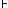

HOME TOP UP PREV NEXT ENGLISH MAP Logisch-Philosophische Abhandlung 4.442
| p | q | |
| W | W | W |
| F | W | W |
| W | F | |
| F | F | F |
(Frege's "Urteilsstrich" "" ist logisch ganz bedeutungslos, er zeigt bei Frege (und Russell) nur an, daß diese Autoren die so bezeichneten Sätze für wahr halten. "" gehört daher ebensowenig zum Satzgefüge wie etwa die Nummer des Satzes. Ein Satz kann unmöglich von sich selbst aussagen, daß er wahr ist.)
Ist die Reihenfolge der Wahrheitsmöglichkeiten im Schema durch eine Kombinationsregel ein für allemal festgesetzt, dann ist die letzte Kolonne allein schon der Ausdruck der Wahrheitsbedingungen. Schreiben wir diese Kolonne als Reihe hin, so wird das Satzzeichen zu: "(W W - W)(p, q)", oder deutlicher: "(W W F W)(p, q)".
Die Anzahl der Stellen in der linken Klammer ist durch die Anzahl der Glieder in der rechten bestimmt.)
HOME TOP UP PREV NEXT ENGLISH MAP Logisch-Philosophische Abhandlung 4.442